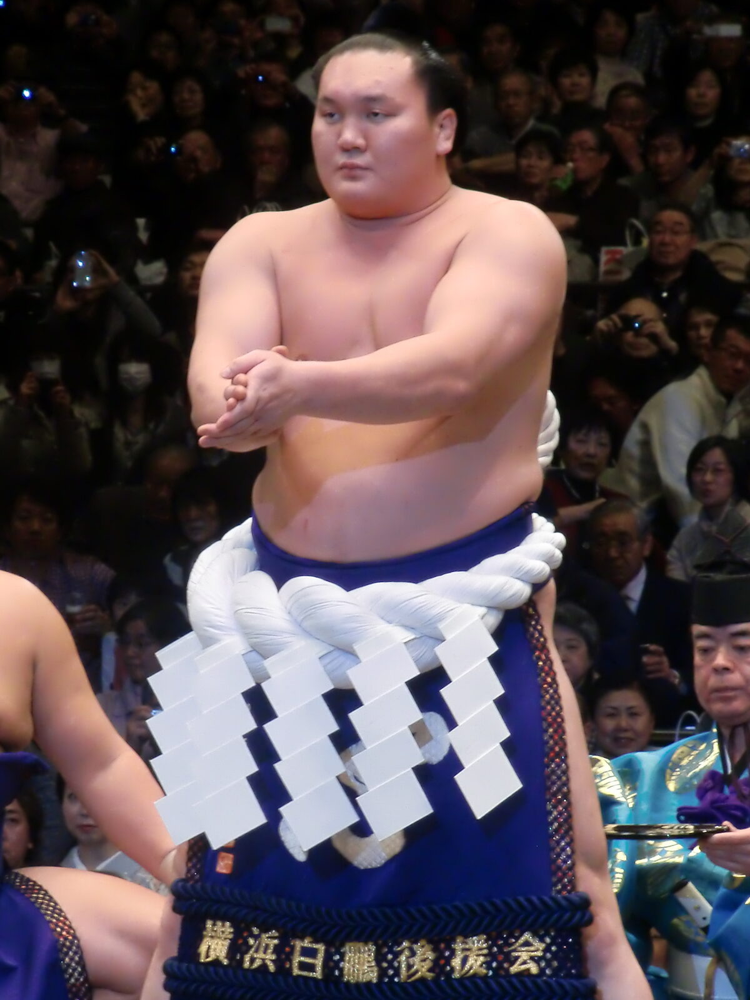

Sumo
Sumoya ayrı bir ilgim var. Türkçe sumo içerik üreten birkaç kişiden biriyim. X'teki (eski adıyla Twitter) @sumo_turk hesabında sumo paylaşıyorum. Bu sayfa, sumoyu ilk kez izleyecek biri için bir başlangıç olsun.
Bir bakışta
- Ring
- Kilden yükseltilmiş bir zemin (dohyō); halkanın çapı 4,55 metre[2]
- Kazanan
- Rakibini halkanın dışına çıkaran ya da ayak tabanları dışında bir yerini yere değdiren güreşçi[1]
- Siklet
- Yok; bir güreşçi kendi kilosunun iki katı bir rakiple karşılaşabilir[1]
- Teknik
- 82 resmî kazanma tekniği (kimarite)[3]
- Lig
- Altı lig, en üstte makuuchi[1]
- Turnuva
- Yılda altı turnuva, her biri 15 gün[11]
Kurallar
İki güreşçi (rikishi), kilden yükseltilmiş bir zeminin (dohyō) üstündeki halkada karşılaşır. Halkanın çapı 4,55 metre.[2] Halkanın dışına ilk basan ya da ayak tabanları dışında bir yeriyle yere ilk değen güreşçi maçı kaybeder.[1]
Sumoda siklet yok. Bir güreşçi kendi kilosunun iki katı bir rakiple karşılaşabilir.[1]

Maçı halkanın içinde bir hakem (gyōji) yönetir. Halkanın çevresinde beş hakem (shimpan) daha oturur. Bu beş hakem gyōji kararına itiraz edip bir toplantı (mono-ii) çağırabilir. Toplantıda kararı onaylar, tersine çevirir ya da maçı yeniden yaptırırlar.[5]
Kazanma tekniklerine kimarite denir. 2001'den beri 82 teknik resmî olarak tanınıyor. Beş durum da teknik sayılmayan galibiyet olarak kayda geçiyor.[3]
Bazı hareketler yasak (kinjite): kapalı yumrukla vurmak, saçtan tutmak, göze ya da mide çukuruna parmakla dürtmek, iki avuçla iki kulağa aynı anda vurmak, kasıktan tutmak ya da çekmek, boğazdan tutmak, göğse ya da bele tekme atmak ve rakibin parmaklarını geriye bükmek. Bunlardan birini yapan güreşçi diskalifiye olur ve maçı kaybeder (hansoku). Kuşağı (mawashi) çözülen güreşçi de aynı şekilde kaybeder.[4]
Ligler
Profesyonel sumoda altı lig var. Yukarıdan aşağı sıralanışları şöyle:[1]
- MakuuchiEn üst lig. 2004'ten beri 42 güreşçi.[7]
- Jūryō28 güreşçi.[1] Maaşın ve bütün ayrıcalıkların başladığı ilk lig.[8]
- Makushita120 güreşçi.[1]
- Sandanme160 güreşçi. Mart 2022'ye kadar 200, Ocak 2025'e kadar 180 güreşçiydi.[6]
- JonidanSabit bir sayısı yok; genellikle 200 ile 250 arası güreşçi.[6]
- JonokuchiEn alt lig; 40 ile 90 arası güreşçi.[6]
İlk iki ligin güreşçilerine sekitori denir. Sekitori turnuvada her gün bir maç yapar, 15 günde 15 maç. Alt liglerdeki güreşçiler turnuva boyunca yedi maç yapar.[1][8]
Seviyeler
Makuuchi kendi içinde beş seviyeye ayrılır. Yukarıdan aşağı: yokozuna, ōzeki, sekiwake, komusubi ve maegashira. İlk dördüne san'yaku denir.[1][7]
Turnuvayı galibiyetlerin çoğunluğuyla bitirmeye kachi-koshi denir: 15 maçta en az 8, yedi maçta en az 4 galibiyet. Kachi-koshi genellikle bir sonraki turnuvada yükselmek, tersi olan make-koshi ise düşmek demektir.[8]
- YokozunaEn yüksek seviye. Bu seviyeye çıkmak için bir ōzekinin üst üste iki turnuva kazanması ya da buna denk bir başarı göstermesi beklenir.[1] Yokozuna Değerlendirme Kurulu önerir, Japonya Sumo Birliği'nin yönetim kurulu karar verir. Bu seviyeden düşülmez.[7]
- ŌzekiBir turnuvayı make-koshi ile bitiren ōzeki kadoban olur. Bir sonraki turnuva da make-koshi ile biterse sekiwake seviyesine düşer; orada 10 galibiyet alırsa ōzeki seviyesine geri döner. Bu seviyeye yükselmenin kesin bir kuralı yok.[7]
- SekiwakeŌzekinin bir altı. Üst üste iki make-koshi alan ōzeki bu seviyeye iner.[7]
- KomusubiSan'yaku seviyelerinin en altı.[1]
- MaegashiraSan'yaku dışındaki bütün makuuchi güreşçileri. Yukarıdan aşağı numaralanır: maegashira 1'den yaklaşık maegashira 16 ya da 17'ye kadar.[1][7] Bir maegashira bir yokozunayı yenerse altın yıldız (kinboshi) kazanır. Her kinboshi, güreşçinin sekitori kaldığı sürece aldığı primi artırır.[1][10]
Her seviyede iki taraf var: doğu ve batı. Aynı seviyede doğu, batıdan bir basamak yukarıda sayılır; liste doğu 1, batı 1, doğu 2, batı 2 diye iner.[1][7]
Bütün bu sıralamanın yazılı hâline banzuke denir. Yeni banzuke genellikle turnuvadan 13 gün önceki pazartesi açıklanır.[9]
Turnuvalar
1958'den beri yılda altı resmî turnuva (honbasho) yapılıyor. Her biri pazar günü başlıyor ve 15 gün sürüyor. Takvim şöyle:[1][11]
- Ocak · Hatsu BashoTokyo, Kokugikan
- Mart · Haru BashoOsaka; Osaka Basho diye de bilinir
- Mayıs · Natsu BashoTokyo, Kokugikan
- Temmuz · Nagoya BashoNagoya
- Eylül · Aki BashoTokyo, Kokugikan
- Kasım · Kyūshū BashoFukuoka
Turnuvayı en çok galibiyetle bitiren güreşçi şampiyonluğu (yūshō) kazanır. Makuuchi şampiyonu İmparator Kupası'nı alır. İki güreşçi eşit galibiyetle bitirirse ek bir maç yapılır. Üç güreşçi eşitse ikişerli maçlar, biri üst üste iki maç kazanana kadar sürer.[1][11]
Yokozuna ve ōzeki dışındaki makuuchi güreşçileri turnuvayı kachi-koshi ile bitirirse üç özel ödüle (sanshō) aday olur: üstün performans (shukun-shō), mücadele azmi (kantō-shō) ve teknik (ginō-shō).[1][12]
Sevdiğim iki güreşçi
Her güreşçi bir kulübe (heya) bağlı. Ahır, bir ya da birkaç antrenörün (oyakata) yönetiminde.[15][16] Ben Hakuhō ve Ura'yı ayrı severim.
Hakuhō Shō
11 Mart 1985'te Moğolistan'ın başkenti Ulan Batur'da doğdu. Miyagino ahırında güreşti. Mart 2001'de ilk maçına çıktı, Mayıs 2007'de yokozuna oldu.[13]
Makuuchi liginde 45 şampiyonlukla rekorun sahibi. Bunların 16'sı yenilgisiz (zenshō yūshō), bu da bir rekor. En çok kariyer galibiyeti (1.187) ve en çok makuuchi galibiyeti (1.093) rekorları da onda.[13]
Eylül 2021'de emekli oldu. Haziran 2025'te Japonya Sumo Birliği'nden ayrıldı. Ekim 2026'da Uluslararası Sumo Federasyonu'nun başına geçti.[13]


Ura Kazuki
22 Haziran 1992'de Osaka'nın Neyagawa şehrinde doğdu. Kise ahırında güreşiyor. Çoğunlukla iterek güreşir ama maçları akrobatiktir; izori, tasukizori ve tsutaezori gibi tekniklerle kazandığı maçlar var.[14]
Temmuz 2017'de sağ dizini sakatladı ve üç lig düştü; Eylül 2018'de sandanme liginin alt sıralarından geri döndü. Ocak 2019'da aynı diz yeniden sakatlandı. Bu kez Kasım 2019'da jonidan liginin en altından, ilk turnuvasından beri en düşük seviyesinden başladı.[14]
Kasım 2021'de teknik ödülünü (ginō-shō) aldı. Ocak 2024'te kariyerinin en yüksek seviyesine, komusubi seviyesine çıktı. Kasım 2026'ya kadar üç kinboshi kazandı: 2017'de Harumafuji'yi, 2022'de Terunofuji'yi, Kasım 2026'da Hōshōryū'yu yendi.[14]

Kaynaklar
- Sumo, İngilizce Wikipedia
- Dohyō, İngilizce Wikipedia
- Kimarite, İngilizce Wikipedia
- Kinjite, İngilizce Wikipedia
- Judge (sumo), İngilizce Wikipedia
- Professional sumo divisions, İngilizce Wikipedia
- Makuuchi, İngilizce Wikipedia
- Glossary of sumo terms, İngilizce Wikipedia
- Banzuke, İngilizce Wikipedia
- Kinboshi, İngilizce Wikipedia
- Honbasho, İngilizce Wikipedia
- Sanshō (sumo), İngilizce Wikipedia
- Hakuhō Shō, İngilizce Wikipedia
- Ura Kazuki, İngilizce Wikipedia; Kasım 2026 turnuvasına kadar
- Heya (sumo), İngilizce Wikipedia
- Toshiyori, İngilizce Wikipedia
Fotoğraflar
- Hakuhō, Ocak 2008: Hakuho fight Jan08.jpg, Eckhard Pecher, Wikimedia Commons, CC BY 3.0; kırpıldı ve küçültüldü
- Hakuhō, Ocak 2012: Hakuho 2012 January.JPG, FourTildes, Wikimedia Commons, CC BY-SA 3.0; kırpıldı ve küçültüldü
- Ura, Ocak 2022: Ura Kazuki20220115-1.jpg, TSUBAME98, Wikimedia Commons, CC BY-SA 4.0; kırpıldı ve küçültüldü